| $T style layout myStyle1 myElement1 ?option value...? |
The [$T style layout] command is like a geometry manager for elements, similar to the Tk grid, pack and place commands. With the help of an example I will show you how some of the style layout options work.
| package require treectrl treectrl .t pack .t set column [.t column create -text hello -width 150 -itembackground linen] .t element create elemGray rect -fill gray -width 20 -height 10 .t element create elemBlue rect -fill blue -width 20 -height 30 .t element create elemGreen rect -fill green -width 20 -height 20 .t style create style1 .t style elements style1 {elemGray elemBlue elemGreen} .t item style set root $column style1 |
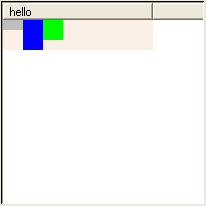
You can see that by default the elements are arranged from left to right in the same order given to the [.t style elements] command. Each element is given only as much space as it requests, in this case 20 pixels each. Also notice that the height of the root item is equal to the height of the tallest element (the blue box).
| .t style layout style1 elemBlue -padx 4 -pady 2 |
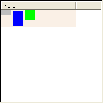
An element has 0 or more pixels of padding on each side. The padding pushes the element away from other elements and from the edges of the item. Notice that the root item is now 4 pixels taller because of the -pady padding.
| .t style layout style1 elemGreen -expand n |
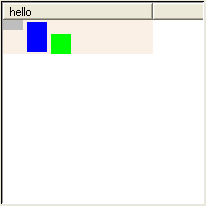
The -expand option tells the style to give extra space to the -padx and -pady options. I told the style to give all the extra vertical space to the north or top side of the green box. As as result the green box is pushed to the bottom of the root item.
| .t style layout style1 elemGreen -expand ns |
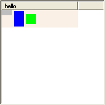
Now half of the extra space is given to the top of the green box and half to the bottom. As a result, the green box is centered vertically inside the item.
| .t style layout style1 elemGray -iexpand y |

This new option -iexpand tells the style to give extra space to the inside of the gray box instead of to the outside like -expand does.
| .t style layout style1 elemGray -iexpand xy |
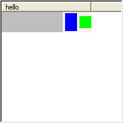
Now the gray box has been given all the extra horizontal space of the root item.
| .t style layout style1 elemGray -sticky "" |
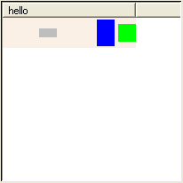
The -sticky option controls how an element is stretched and positioned within the space given to it. The gray box is still given extra "inside" space from the -iexpand option, but it isn't stretching to fill that space.
| .t style layout style1 elemGray -sticky w |
Now the gray box is sticking to the west or left side of its inside space.
| .t style layout style1 elemGray -sticky ws |
Now the gray box is also sticking to the south or bottom side of its inside space.
| .t style layout style1 elemGray -sticky wnes |
Now the default behavior is restored, and the gray box sticks to all sides of its inside space.
| Note Some elements like text and images are not stretched by the -sticky option. |
| .t style layout style1 elemGray -detach yes |
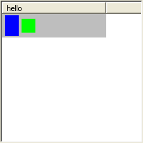
The -detach option tells the style to place an element by itself, without affecting the position of any other elements. The gray box completely fills the root item because of the -iexpand and -sticky options. The blue and green boxes are now shifted to the left since the gray box is not taking up space on the left. The gray box appears behind the blue and green boxes because it is first in the list of elements. Elements are drawn from first to last in the style's list of elements.
| .t style layout style1 elemGray -union elemGreen |
What happened to the gray box? The answer is the gray box is now exactly the same size as the green box. The -union option lets you wrap an element around one or more other elements.
| .t style layout style1 elemGray -ipadx 4 -ipady 4 |
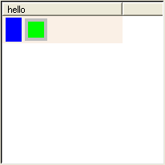
You can see the gray box now because I added some padding to the inside of the it.
| .t style layout style1 elemGray -iexpand n |
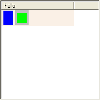
Now the style is giving extra vertical space to the inside top of the gray box. The position of the green box is unaffected by this extra padding.
| .t style layout style1 elemGray -iexpand ns |
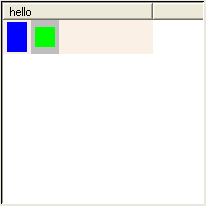
The gray box is now stretched to the height of the root item.
How items are arranged on screen
We've looked at how a style arranges its elements. Now we are going to look at how a treectrl window arranges its items. The next example creates a treectrl window with 20 items. Each item has a text element surrounded by a border element.| package require treectrl treectrl .t -showheader no -showroot no -width 250 pack .t set columnID [.t column create] .t element create elemBorder border -background #ece9d8 -filled yes -relief solid -thickness 1 .t element create elemText text .t style create style1 .t style elements style1 {elemBorder elemText} .t style layout style1 elemBorder -union elemText -ipadx 4 -ipady 4 .t style layout style1 elemText for {set i 1} {$i <= 20} {incr i} { set itemID [.t item create] .t item style set $itemID $columnID style1 .t item element configure $itemID $columnID elemText -text "Item $i" .t item lastchild root $itemID } |
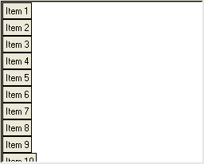
Here you can see the default behavior, which is to arrange the 20 items from top to bottom.
| .t configure -orient horizontal |
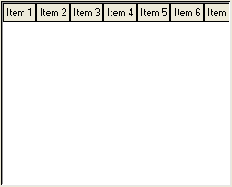
Here we see the first option that controls item arrangement, the treectrl's -orient option. Now all the items are arranged from left to right instead of from top to bottom. If you are displaying a film strip of images it might be useful to arrange items this way.
| .t configure -wrap "5 items" |
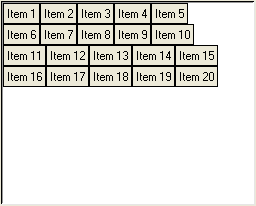
I told the treectrl to put no more than 5 items in a row.
| .t configure -wrap window |
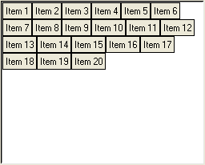
Instead of breaking each row at 5 items, the treectrl puts as many items in a row that fit into the window.
| .t configure -width 200 |
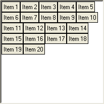
Here I just made the window narrower to demonstrate wrapping.
| .t configure -width 250 -wrap "200 pixels" |
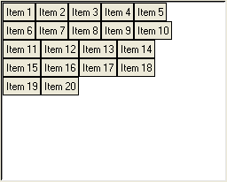
The window is back to its original width of 250 pixels. The -wrap option now says to break each row at 200 pixels, which is exactly how wide I made the treectrl in the previous example, so we end up with the same arrangement of items. You have now seen the 3 different possibilities for the -wrap option:
- -wrap "N items"
- -wrap window
- -wrap "N pixels"
| .t configure -orient vertical -wrap window |
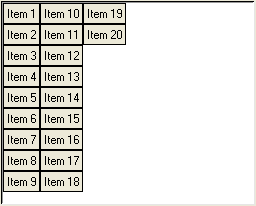
Wrapping works just as well when items are arranged from top to bottom.
How the width of items is determined
When more than one column is visible, every item has the same width no matter what options you use. When only one column is visible, the amount of width given to an item depends on a number of factors. The next example creates a list of 20 items with only one column. Every item is drawn with a "linen" color background to show you how much width is actually given to each item. With this example I will show you how the width of items is affected by various options.| package require treectrl treectrl .t -showheader no -showroot no -width 410 -height 300 pack .t -expand yes -fill both set columnID [.t column create -itembackground linen] .t element create elemBorder border -background #ece9d8 -filled yes -relief solid -thickness 1 .t element create elemText text .t style create style1 .t style elements style1 {elemBorder elemText} .t style layout style1 elemBorder -union {elemText} -ipadx 4 -ipady 4 .t style layout style1 elemText foreach n {5 15 20 10 10 5 15 10 20 15 15 25 10 5 15 5 10 20 15 25} { set itemID [.t item create] .t item style set $itemID $columnID style1 set text [string range "abcdefghijklmnopqrstuvwxyz" 0 $n] .t item element configure $itemID $columnID elemText -text $text .t item lastchild root $itemID } |
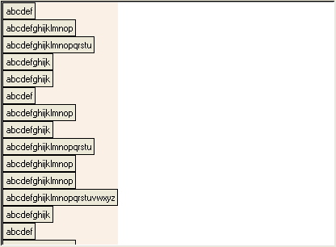
With top-to-bottom layout, and only one column, and no wrapping, every item is exactly as wide as the column. The column's width is affected by the requested width of the items, the requested width of the header (i.e. the column's bitmap/image/text/arrow), and the column's -minwidth, -width, -maxwidth, -expand and -squeeze options.
| .t column configure $columnID -width 200 |

When the column has a fixed width, the width given to every item is equal to that width. In this case the requested width of the items, the requested width of the header, and the other column options have no effect on item width.
| .t configure -wrap "10 items" |
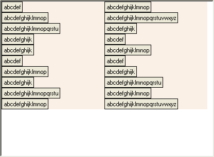
Now there are 2 vertical groups of items. I call each group a range of items. The items are arranged from top to bottom within each range. Both ranges have the same width of 200 pixels.
| .t column configure $columnID -width "" |
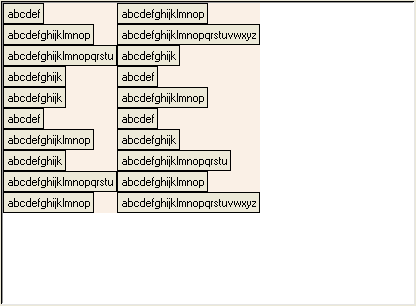
I cleared the fixed column width. Both ranges have a different width from the other. Now each range is exactly as wide as the widest item in that range.
| .t configure -itemwidthequal yes |
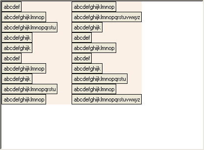
The -itemwidthequal option causes all items to have the same width. The width of every item is equal to the width of the widest item. The left range is now exactly as wide as the right range, which was the widest.
| .t configure -itemwidthequal no -orient horizontal -wrap window |
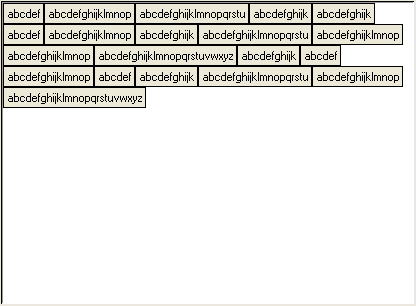
Laying out items left-to-right to demonstrate the next option.
| .t configure -itemwidthmultiple 100 |
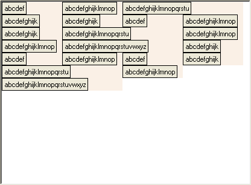
The -itemwidthmultiple option gives every item an even multiple of 100 pixels. The narrower items are 100 pixels wide, while the widest are 200.
| .t configure -itemwidthmultiple "" -itemwidth 100 |
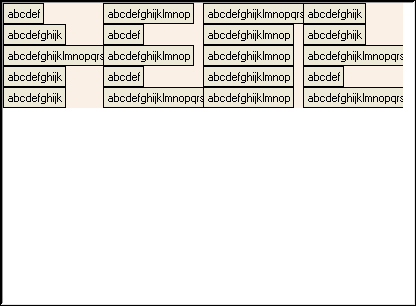
Here the -itemwidth option gives every item a width of 100 pixels.
The two tables below summarize how item width is determined. The order of precedence is from top to bottom within each table.
| Situation (-orient vertical) | How an item's width is determined | Items have equal width? |
|---|---|---|
| More than one column is visible | sum of the calculated widths of all visible columns | yes |
| -wrap == "" | column's calculated width | yes |
| -itemwidth > 0 | -itemwidth option | yes |
| column -width != "" | column's -width option Using the column's -width option this way is deprecated. Use the treectrl's -itemwidth option instead. |
yes |
| -itemwidthequal == true | width of widest item round up using -itemwidthmultiple |
yes |
| all other cases | requested width of style, plus indentation if this is the tree column round up using -itemwidthmultiple |
All items in a range have the same width, but each range may have a different width. |
| Situation (-orient horizontal) | How an item's width is determined | Items have equal width? |
|---|---|---|
| More than one column is visible | sum of the calculated widths of all visible columns | yes |
| -itemwidth > 0 | -itemwidth option | yes |
| column -width != "" | column's -width option Using the column's -width option this way is deprecated. Use the treectrl's -itemwidth option instead. |
yes |
| -itemwidthequal == true | width of widest item round up using -itemwidthmultiple |
yes |
| all other cases | requested width of style, plus indentation if this is the tree column round up using -itemwidthmultiple |
no |
Adding items on demand
If your items have a parent-child relationship (as opposed to a flat list where every item is a child of the root item), and if you need to create many thousands of items, it will be faster to add the items only when the user attempts to display them. This can be done by using the <Expand-before> event which is generated before an item is expanded.| package require treectrl treectrl .t -width 400 -height 300 -showrootbutton yes pack .t -expand yes -fill both set columnID [.t column create -text "Column 0"] .t configure -treecolumn $columnID .t element create elemBorder border -background #ece9d8 -filled yes -relief solid -thickness 1 .t element create elemText text .t style create style1 .t style elements style1 {elemBorder elemText} .t style layout style1 elemBorder -union {elemText} -ipadx 4 -ipady 4 .t style layout style1 elemText .t item configure root -button yes .t item style set root $columnID style1 .t item element configure root $columnID elemText -text "The root item" for {set i 1} {$i <= 100} {incr i} { set itemID [.t item create -button yes] .t item collapse $itemID .t item style set $itemID $columnID style1 .t item element configure $itemID $columnID elemText -text "Item $itemID" .t item lastchild root $itemID } |
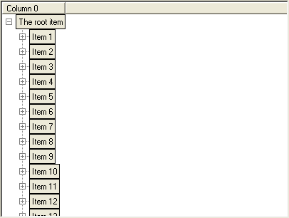
This example creates a treectrl and adds 100 child items to the root item. Every child has a button to indicate that it has children and may be expanded. However, none of the items created actually have child items yet. They will only be added when the user expands an item (by clicking on the item's button, for example). The next bit of code shows how that is done.
| .t notify bind .t <Expand-before> { AddChildItems %T %I } proc AddChildItems {tree parent} { if {[$tree item numchildren $parent] > 0} return set columnID first for {set i 1} {$i <= 100} {incr i} { set itemID [$tree item create -button yes] $tree item collapse $itemID $tree item style set $itemID $columnID style1 $tree item element configure $itemID $columnID elemText -text "Item $itemID" $tree item lastchild $parent $itemID } return } |
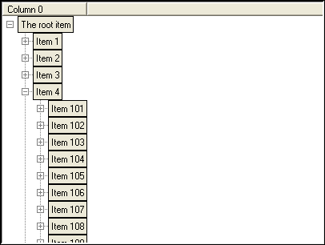
After running the new bit of code item #4 is expanded by clicking its button.
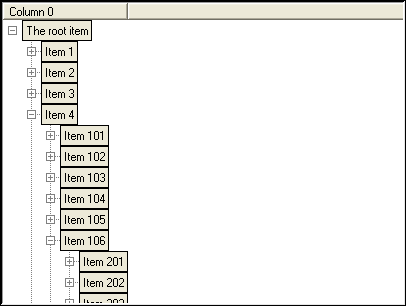
Now item #106 is expanded. In this example you can open items forever to reveal new items.